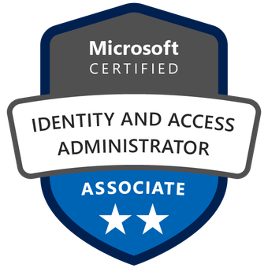

Experience
| IT Admin, Universidad Catolica Andres Bello Caracas, Venezuela |
Sep 2024 - Present 11 months |
|
» Monitor, analyze, and resolve requirements associated with the IT infrastructure, which includes three remote locations in addition to the main office, serving more than 4,000 users in total.
» Coordinated the implementation of OCS Inventory (an IT asset inventory system running on top of Debian, Apache HTTP Server, and MariaDB) automating the registration and visibility of more than 1,000 devices. |
| Microsoft 365 Consultant, Bekesantos CA Caracas, Venezuela |
Apr 2024 - Aug 2024 5 months |
| » Advised and educated on the features and best practices while implementing the Microsoft 365 platform to a customer base that included more than 30 companies nationally and internationally. |
| IT Specialist II, Softelinet Soluciones Tecnologicas CA Caracas, Venezuela |
Mar 2023 - Nov 2023 8 months |
|
» Advised and recommended improvements and new deployments on the overall IT infrastructure of a company that served 25 workers, remote and on site, as well as several external clients.
» Established security policies spanning four interconnected locations, including a private cloud site, to prevent abuse and compromise of identities based on the Windows environment and the Google Workspace instance. |
| IT Supervisor, Ferretotal Caracas, CA Caracas, Venezuela |
Jun 2022 - Mar 2023 9 months |
|
» Designed and executed the replacement of multiple physical servers with virtual equivalents in Hyper-V Server and VMWare at five locations, improving the effectiveness and agility of server provisioning.
» Standardized the processes that governed the administration of the Microsoft 365 and Windows platform at the permissions and policies level, improving the security and response of a team of four people by 75%. |
| IT Services Advicer, Ferretotal Caracas, CA Caracas, Venezuela |
Feb 2021 - Jun 2022 1y 3 months |
|
» Monitored, analyzed and resolved requirements associated with the corporation's technological infrastructure, which
included 15 remote locations added to the operations center, serving 350 users in total.
» Promoted the use of cloud-native tools already acquired by the company (Purview, SharePoint and Exchange Online) with the aim of eliminating dependence on manual processes and reducing operational costs. » Orchestrated the replacement of 15 domain controllers, based on diverse versions of Windows Server, which were causing replication problems in the infrastructure and causing delays in user workflow. |
| Systems Administrator, Administradora Humana, CA Caracas, Venezuela |
Jan 2016 - Feb 2021 5y 1 month |
|
» Supervised and advised on the company's IT infrastructure operations, which served more than 40 users.
» Managed and operated infrastructure restructuring using VMWare virtualization technology to improve efficiency, security, and consolidation of five workloads in a Windows Server and SQL environment. » Strengthened the network perimeter security by replacing a generic firewall with a custom pfSense installation with router functions, VPN, multi-WAN, among other capabilities. |
Education
| Computer Science, Universidad Alejandro de Humboldt | Jan. 2010 - Jun 2013 3y 6 months |
Skills
| Languages | English (Professional Proficiency); Fluid Spanish (Native). |
| Technical Skills | Windows Server, Azure, Microsoft 365, DHCP, DNS, Active Directory, GPO, VMWare, Windows 10/11, |
| pfSense, Watchguard, Google Workspace, GLPI, Basic Network Troubleshooting |
Certifications
Microsoft Certified: Azure Developer Associate

Issued Jun, 2025
view credential

Microsoft certified: Identity and Access Administrator Associate

Issued Dec, 2022
view credential